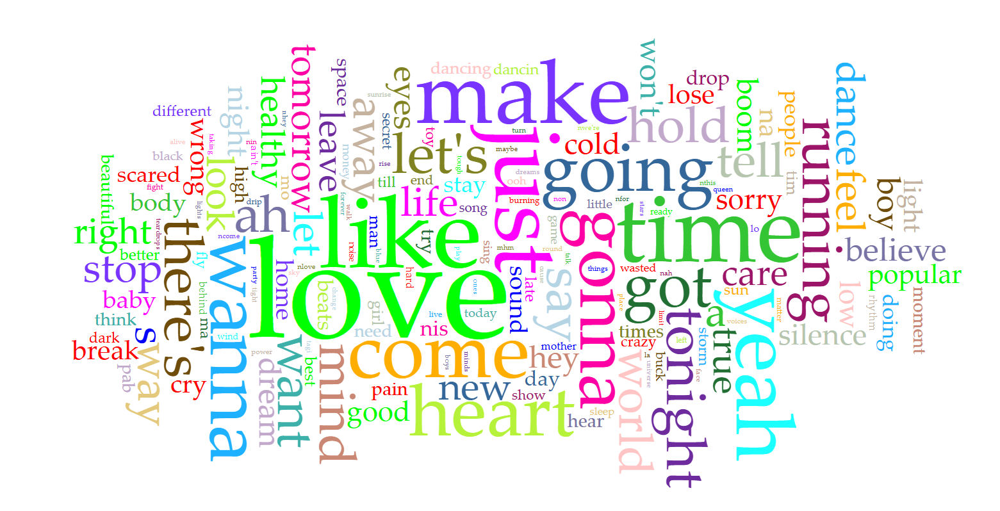
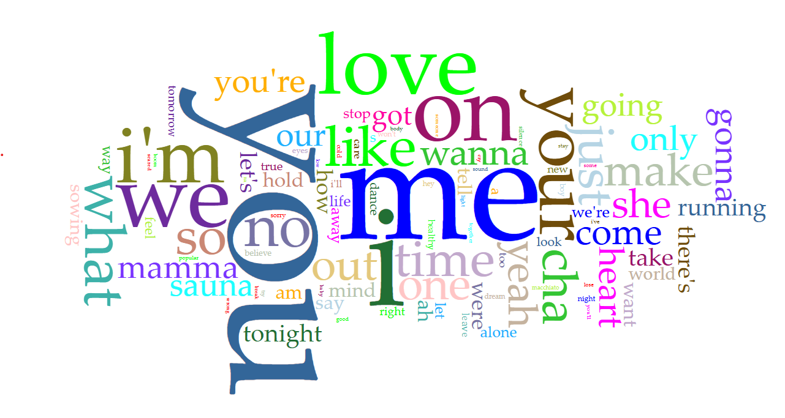

Moving on to a related text analysis based sub-question, we seek to explore: How have the language choice and topic/vocabulary trends of each contest’s top five most highly rated songs change between 2008 and 2025? This analysis is based on data from the top five ranked Eurovision Song Contest entries each year (excluding 2020, when the Contest was cancelled with no voting), using Voyant Tools and Tableau Public for visualizing our text analysis. By focusing only on the highest ranked songs, we aim to highlight the linguistic and lyrical patterns that are linked with success in the contest.
This visualization clearly shows that English has been the dominant language among the top five Eurovision songs throughout the 2008-2025 period, particularly up until 2020. In most of these years, the majority of highly ranked songs have been performed fully in English, an exception being 2012. This suggests that English has generally been viewed as the safest and most effective language choice for reaching a wider international audience and securing more points.
However, the chart also reveals that in recent years, since 2020, more highly ranked participants choose to perform mixed language songs where another language is included. Moreover, in 2021, 4 out of 5 highly ranked songs weren’t performed in English at all, with countries like France, Ukraine, Switzerland and the winner Italy choosing to perform in their native languages, perhaps influenced by the cultural isolation and promotion of local culture relevant in many countries during the preceding COVID-19 pandemic. In the following years, it is also evident that more participants choose to perform in their national language or mix it or another language with English. This indicates that while English is still commonly used, it is no longer viewed as almost a requirement for reaching a high result.
When analyzing how lyrics and vocabulary change over time, there were some noticeable patterns. In the earlier years of the timeframe, especially between 2008 and 2015, the most common words related to romantic relationships. Vocabulary such as love, like, heart, dream, beautiful and believe appears frequently. This reflects a common assumption about the Eurovision “style” of music - the general public opinion that Eurovision songs often focus on love, longing and emotional connection, typically between two people.
Over time, the vocabulary trends can be seen to change. From the mid-2010s onwards, there is a noticeable increase in self-focused language, with words such as you, I, me and we becoming more common. Many songs focus on the artists’ own feelings, experiences or personal struggles. This shift showcases a move away from classic love songs and towards more individually reflective songs. However, the romantic theme doesn’t disappear - love-related words continue to appear frequently throughout this period. Additionally, action-driven words (come, make, let’s) remain popular. This shows how familiar themes are adapted to match changing cultural values, where nowadays the focus in music is often placed on themes of acceptance, self-love and emotional strength and growth.
When viewed together, the language and vocabulary trends suggest that Eurovision's top 5 songs every year increasingly emphasize authenticity and self-expression. Earlier entries appear to aim for universal appeal through English lyrics and love stories, while later entries are more daring to experiment with identity and action-driven thematic focuses and language choices. The growing acceptance of non-English songs among the top five supports this suggestion and somewhat disproves our hypothesis of highly ranked songs displaying more standardized language choices and thematic patterns over time. Instead of tying success to the use of the English language, the use of the national language can strengthen a song’s emotional impact and national identity, allowing it to be less standardized and more personal, while still being relatable for certain audience groups. This suggests that Eurovision has moved away from one well-known formula for success and now has more space for rewarding originality, diversity and confidence.
Years with fewer fully English language songs among the top five challenge the idea that English is always the best choice. These cases often involve strong performances that rely on clear emotions, a narrative or distinctive musical style. The data suggests that when these elements are present, a non-English language becomes less of a barrier and still receives recognition from a global audience.
Overall, the data shows that between 2008 and 2025, the top five Eurovision songs generally have become more linguistically diverse and thematically complex. English still remains as the most common language, but its dominance has weakened over recent years. At the same time, lyrical topics have shifted from traditional romantic narrative towards themes of identity, personal growth and empowerment. The visualizations created by Tableau and Voyant tools make the changes easier to compare across years.